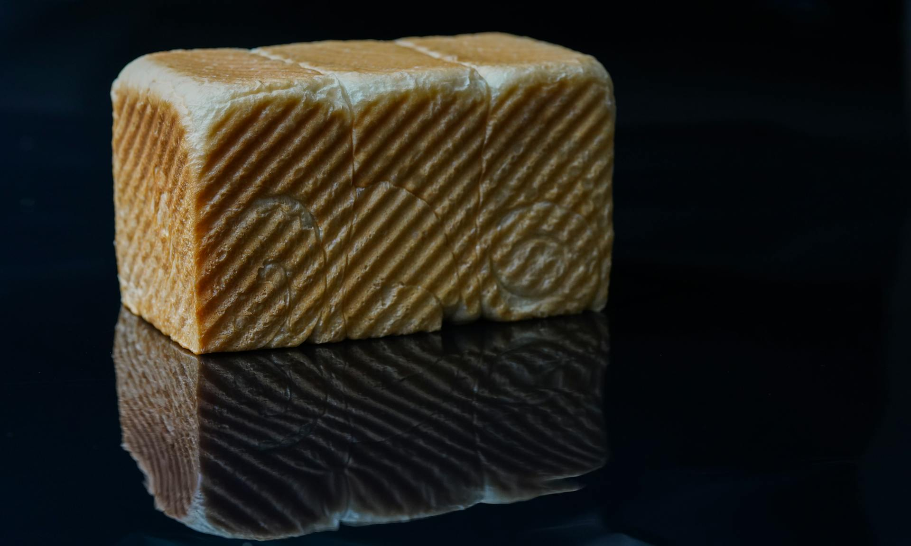
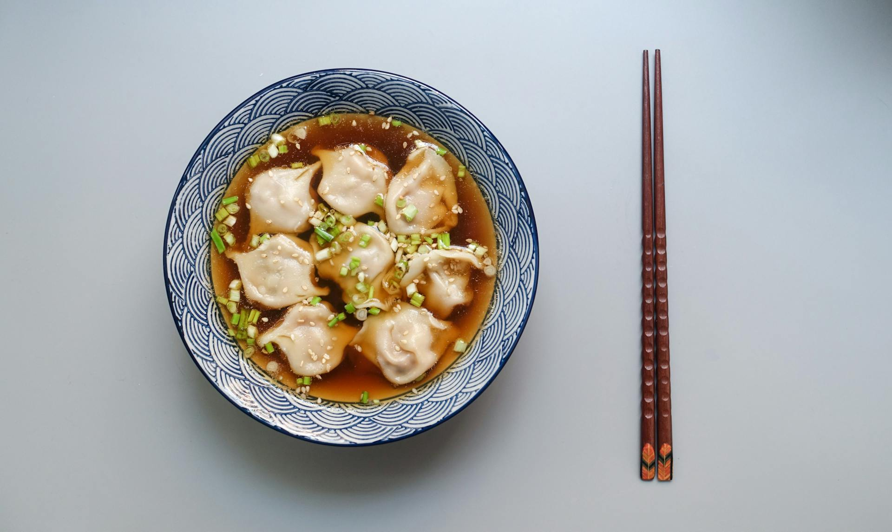
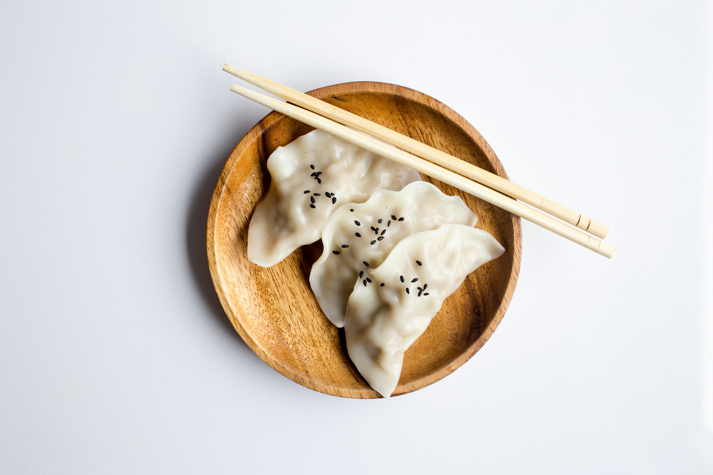
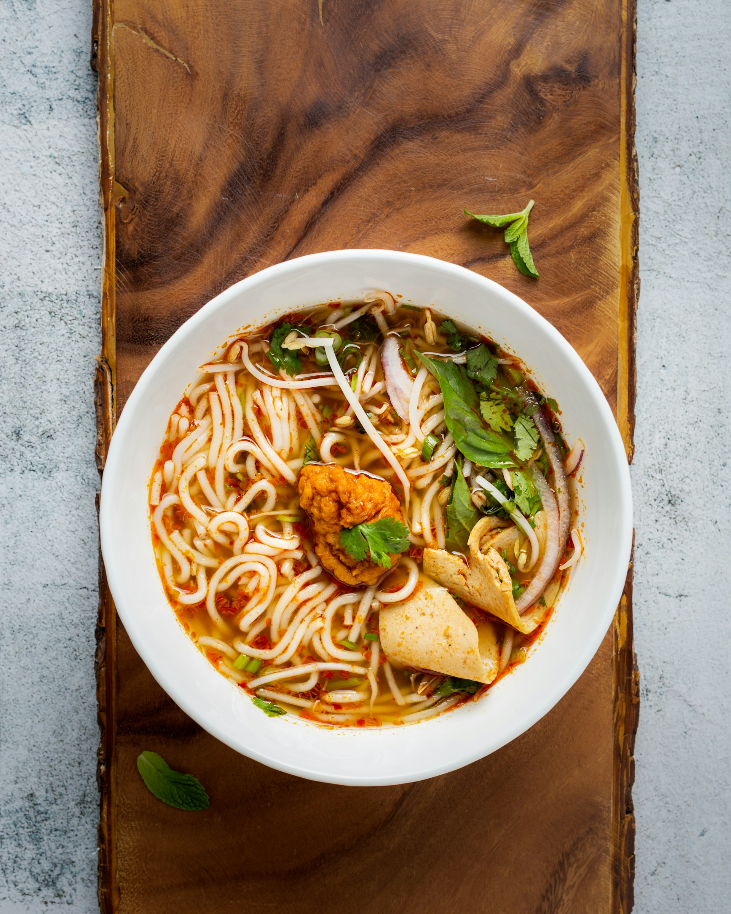
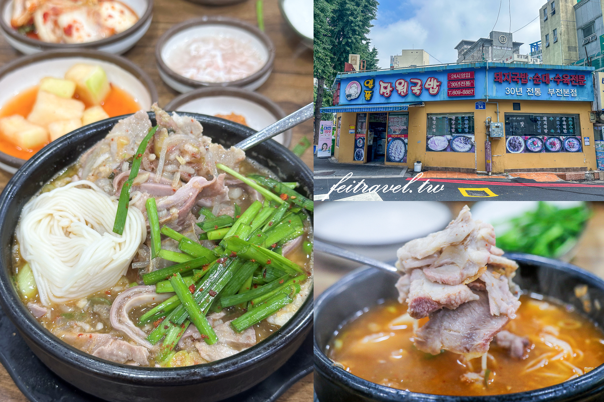

吃在釜山
秋天釜山必吃
從魚市場到街頭小吃，秋天釜山的美食選擇豐富多元

札嘎其市場海鮮
釜山魚市場之王，秋天正值螃蟹、鮑魚、龍蝦當令。現點現做的活海鮮，從蒸籠到烤網，鮮甜滋味在舌尖散開，是來釜山不能錯過的第一名美食。

烤扇貝、烤鮑魚
海雲台海水浴場周邊的經典路邊美食攤，一顆顆大扇貝在炭火上滋滋作響，秋天微涼的夜晚配上一杯燒酒，人間美味。

紅燒韓牛
韓牛的升華吃法！將頂級韓牛以特製醬汁紅燒，肉質軟嫩、入口即化，搭配白飯讓人忍不住多扒好幾碗，是釜山秋天補充能量的聖品。

炸雞配啤酒
韓國國民美食！酥脆多汁的炸雞配上冰涼啤酒，是遊客最愛的宵夜組合。釜山街頭處處可見炸雞店，外酥內嫩讓人吮指回味。

黑糖餅
BIFF廣場最具人氣的街頭小吃，扁平的圓形煎餅外皮酥脆，內餡包裹著濃郁的黑糖與堅果碎，一口咬下甜蜜滋味在嘴裡化開。

BIFF廣場堅果糖
釜山國際電影節廣場的著名零食，將麥芽糖裹滿各式堅果，香脆可口，是邊逛BIFF廣場邊吃的好選擇，也是帶回國送禮的人氣伴手禮。

海鮮煎餅
釜山代表料理之一，秋天正是品嚐的好時節。外皮煎得金黃酥脆，內餡藏著滿滿的蝦仁、章魚、韭菜，每一口都是海的鮮味。

辣炒年糕
韓國最具代表性的街頭美食之一，秋天微涼的天氣裡，來一份辣呼呼的炒年糕最對味。釜山版本的辣炒年糕通常會加入魷魚或炸物，份量十足。

魚板（Fish Cake）
釜山路邊常見的小吃，用竹籤串起魚板浸入熱呼呼的柴魚高湯，天涼時喝一口暖胃又暖心。是釜山人從小吃到大的平價美味。

湯飯（國民湯飯）
釜山人的早餐首選！大骨熬煮的濃郁高湯，配上半碗白飯，再根據喜好加入牛肉、豬肉或海鮮。秋天早上來一碗，，元氣滿滿。